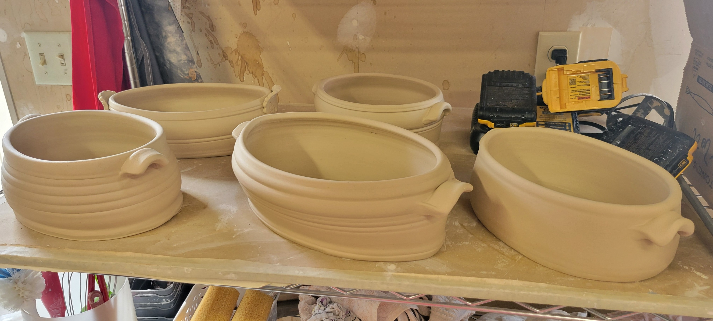
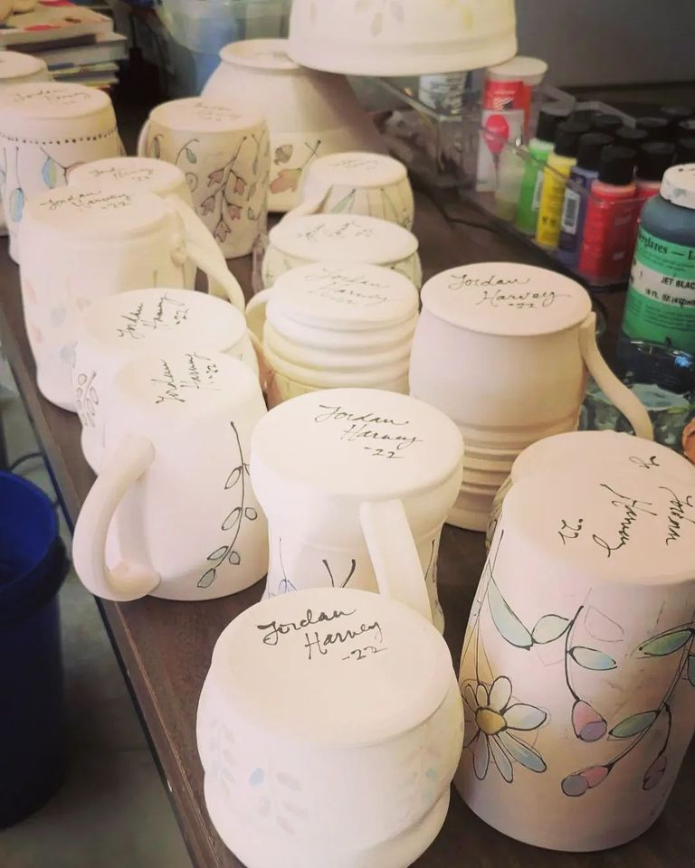

These are examples of pots in various stages. I love handbuilding functional ware like the bakers above. Painting the pots with glazes and underglazes helps make them my own. I choose to decorate with flowers because I love to bring the outdoors in. The picture in the kiln shows how the heat of the kiln changes the chalky coating to vibrant layers of glass.